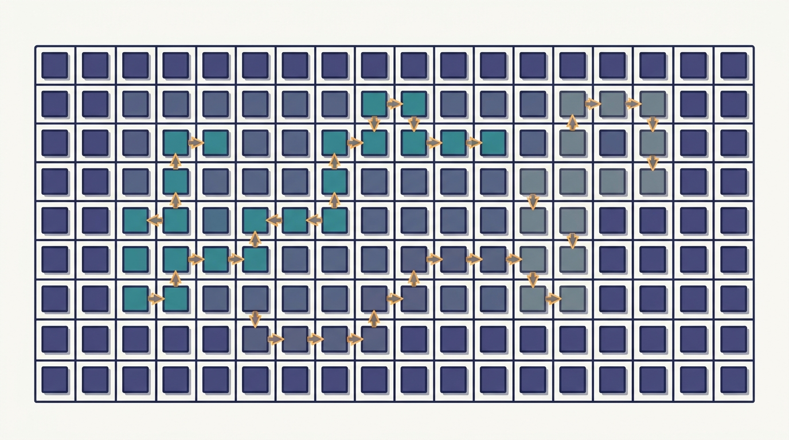

"I remember every token you ever said to me. That is precisely the problem, and also why I have run out of room for anyone else."
A KV Cache That Cannot Forget

The KV cache is the single most important data structure in LLM serving: it turns generation from quadratic recompute into one cheap step per token, and in doing so becomes the memory that actually limits how many users one GPU can serve. Every token a model generates must attend to every token before it, so a server that did not remember anything would redo all of that attention work at every step. Caching the past keys and values fixes the compute, but the cache grows with every token and with every concurrent user, until it dwarfs the model weights and decides, more than any other factor, how many sequences fit on a node. This section explains the cache, the memory problem it creates, and PagedAttention, the per-node memory manager that treats the cache like virtual memory so one GPU can hold many more sequences at once. This is scale-up, not scale-out, but it is the substrate that the distributed LLM serving of Chapter 24 multiplies across a fleet.
In the previous section we shrank the model itself through distillation; now we turn to the memory that the model consumes while it runs. Autoregressive generation produces one token at a time, and each new token is computed by attending to the entire sequence so far. Written naively, generating the token at position $t$ recomputes the keys and values of all $t$ earlier tokens, so producing a sequence of length $T$ costs work that grows with $T^2$. The keys and values of past tokens do not change once computed, so a serving system caches them and reuses them. That cache, the KV cache, is what makes a chatbot answer at a steady pace instead of slowing to a crawl as the conversation lengthens. It is also, on a loaded server, the resource that runs out first.
This is firmly a per-node, scale-up topic, exactly the unit economics that Section 22.1 argued you must master before sizing any fleet. We study the cache on one GPU because every distributed serving decision later, how many replicas, how large a batch, how to route a multi-turn conversation, is downstream of how many concurrent sequences a single node can actually hold in KV memory.
1. Why the KV Cache Exists Beginner
A decoder-only transformer generates text one token at a time. To produce the next token it runs self-attention, in which the query vector of the current position is compared against the key vectors of all previous positions, and the result is a weighted sum of their value vectors. The keys and values of positions $1$ through $t-1$ depend only on those tokens and the (frozen) weights; they do not change when token $t$ arrives. Recomputing them at every step is pure waste.
The KV cache removes that waste by storing, for every layer and every attention head, the key and value vectors of every token seen so far. When the next token arrives, the model computes only its own query, key, and value, appends the new key and value to the cache, and attends against the whole cache. The cost of one generation step drops from $O(t)$ recompute to $O(1)$ work plus one cheap attention pass over the cached entries. The two regimes of inference fall straight out of this structure: a prefill phase that ingests the prompt and fills the cache in one parallel pass, then a decode phase that extends the cache one token at a time. The figure below traces the cache filling during decode.
The KV cache converts a recompute cost that grows with sequence length into a memory cost that grows with sequence length. On modern accelerators that is usually the right trade, because decode is memory-bandwidth bound and arithmetic is cheap relative to moving data. But it relocates the bottleneck rather than removing it: the question at serving time stops being "can the GPU compute fast enough?" and becomes "does the GPU have room to remember all these conversations at once?" Everything in the rest of this section is about answering the second question well.
2. The Memory the Cache Costs Intermediate
The KV cache has a size you can write down exactly. For a single sequence, the cache stores one key vector and one value vector per token, per layer, per attention head, with each number taking a fixed count of bytes. Multiply by the number of concurrent sequences in the batch and you have the total. With $L$ layers, $H$ key/value heads, head dimension $d_h$, sequence length $S$, batch size $B$, and $p$ bytes per element, the cache occupies
$$M_{\text{KV}} = 2 \cdot B \cdot S \cdot L \cdot H \cdot d_h \cdot p \;\text{ bytes},$$where the leading $2$ counts keys and values separately. Put real numbers in. A 13-billion-parameter model with $L = 40$ layers, $H = 40$ heads, $d_h = 128$, in 2-byte half precision, caches $2 \cdot 40 \cdot 40 \cdot 128 \cdot 2 \approx 0.82$ megabytes per token. A single sequence at $S = 2048$ tokens therefore carries about $1.7$ gigabytes of KV cache, and a batch of 32 such sequences needs roughly $54$ gigabytes, well beyond the model's own $26$ gigabytes of half-precision weights. The cache does not merely rival the weights; for long contexts and healthy batch sizes it is the dominant consumer of GPU memory, and therefore the true ceiling on how many users a node can serve.
Two properties of this formula drive every design choice that follows. First, $M_{\text{KV}}$ is linear in both $S$ and $B$, so doubling the context length or the batch doubles the cache; long-context serving and high-concurrency serving pull on the same scarce resource. Second, the cache is the part of the memory budget that is genuinely dynamic, growing and shrinking as sequences arrive, generate, and finish, whereas the weights are fixed. A memory manager that handles this churn badly will leave the GPU half-empty while turning users away, which is exactly the failure the next section diagnoses.
It is a little absurd that a 13-billion-parameter model, the product of months of training and millions of dollars, can be out-massed in GPU memory by the transcript of a few dozen chats it is currently having. The weights are the cathedral; the KV cache is the crowd that showed up, and the crowd needs somewhere to stand.
3. The Fragmentation Problem in Naive Allocation Intermediate
Knowing the cache is large is not the same as managing it well. The natural first implementation stores each sequence's cache in one contiguous slab of memory, the way a tensor normally lives. But a sequence's final length is not known when it is admitted: a user might type two words or two thousand. To hold a contiguous slab safely, the server must reserve the maximum supported length up front, so a 20-token chat reserves room for 2048 tokens and leaves the rest idle. This over-reservation is internal fragmentation, memory committed to a sequence that the sequence never uses.
Contiguity creates a second waste. As sequences of different lengths finish and free their slabs, the gaps they leave are scattered and oddly sized. A new sequence that needs a slab larger than any single gap cannot be admitted even when the total free memory is more than enough, because no single hole is big enough. This is external fragmentation, the classic failure mode of contiguous allocators, and it means a GPU can report plenty of free KV memory while refusing new work. Between over-reservation and scattered holes, naive contiguous KV management routinely wastes most of the memory it is given, which translates directly into serving far fewer concurrent users than the hardware could support.
The fix is the same one operating systems found decades ago for exactly this problem: stop demanding that a logically contiguous object be physically contiguous. The code below makes the waste concrete by running both strategies over the same realistic mix of variable-length sequences on one GPU's KV budget.
import random
# A KV-cache memory manager bake-off on one GPU. We compare a naive contiguous
# allocator that must reserve a fixed maximum length per sequence (the source of
# over-reservation + fragmentation waste) against a paged block allocator that
# hands out fixed-size blocks on demand (the PagedAttention idea).
random.seed(7)
# Per-node budget and model facts (Llama-2-13B-class, fp16 KV).
GPU_KV_SLOTS = 200_000 # token-slots of KV memory left after weights (one GPU)
MAX_LEN = 2048 # the context length the server advertises / must support
BLOCK = 16 # tokens per page (vLLM default)
# A realistic serving mix: most prompts are short, a few are long. Each sequence's
# *actual* final length is unknown when it is admitted, so a contiguous allocator
# has to reserve MAX_LEN up front to be safe.
def sample_lengths(n):
out = []
for _ in range(n):
r = random.random()
if r < 0.80: out.append(random.randint(8, 256)) # short chats
elif r < 0.97: out.append(random.randint(256, 1024)) # medium
else: out.append(random.randint(1024, MAX_LEN)) # long context
return out
seqs = sample_lengths(2000)
# Contiguous allocator: reserve MAX_LEN per admitted sequence.
cont_used = 0 # token-slots actually filled by live tokens
cont_resv = 0 # token-slots reserved (and thus unavailable to others)
cont_admitted = 0
for L in seqs:
if cont_resv + MAX_LEN > GPU_KV_SLOTS:
break # no room to safely admit another sequence
cont_resv += MAX_LEN # must reserve the worst case
cont_used += L # but only L slots ever hold real KV
cont_admitted += 1
# Paged allocator: hand out BLOCK-sized pages on demand.
def blocks_for(L):
return (L + BLOCK - 1) // BLOCK # ceil-div: pages this sequence needs
page_used = 0 # token-slots holding real KV
page_resv = 0 # token-slots backed by allocated pages
page_admitted = 0
for L in seqs:
need = blocks_for(L) * BLOCK
if page_resv + need > GPU_KV_SLOTS:
break
page_resv += need
page_used += L
page_admitted += 1
def util(used, resv):
return 100.0 * used / resv if resv else 0.0
print(f"GPU KV budget : {GPU_KV_SLOTS:,} token-slots")
print(f"advertised max length : {MAX_LEN} page size: {BLOCK} tokens")
print()
print("contiguous (reserve max-length per sequence)")
print(f" sequences admitted : {cont_admitted}")
print(f" slots reserved : {cont_resv:,}")
print(f" slots holding KV : {cont_used:,}")
print(f" memory utilization : {util(cont_used, cont_resv):.1f}%")
print()
print("paged (blocks on demand, PagedAttention)")
print(f" sequences admitted : {page_admitted}")
print(f" slots reserved : {page_resv:,}")
print(f" slots holding KV : {page_used:,}")
print(f" memory utilization : {util(page_used, page_resv):.1f}%")
print()
print(f"concurrency gain : {page_admitted / cont_admitted:.1f}x more sequences per GPU")
print(f"waste under contiguous: {cont_resv - cont_used:,} slots reserved but never used")
print(f"waste under paged : {page_resv - page_used:,} slots (only last-block padding)")
GPU KV budget : 200,000 token-slots
advertised max length : 2048 page size: 16 tokens
contiguous (reserve max-length per sequence)
sequences admitted : 97
slots reserved : 198,656
slots holding KV : 21,781
memory utilization : 11.0%
paged (blocks on demand, PagedAttention)
sequences admitted : 778
slots reserved : 199,600
slots holding KV : 194,032
memory utilization : 97.2%
concurrency gain : 8.0x more sequences per GPU
waste under contiguous: 176,875 slots reserved but never used
waste under paged : 5,568 slots (only last-block padding)The numbers are stark because the workload is realistic: most chats are short, a few are long, and a contiguous allocator must plan for the longest. Reserving the worst case for every sequence is what drags utilization down to a ninth of the memory, and it is precisely the waste the paged scheme removes by allocating only what each sequence currently needs.
4. PagedAttention: the Cache as Virtual Memory Advanced
PagedAttention, introduced with the vLLM serving engine, applies the operating-system idea of paging to the KV cache. The physical KV memory is carved into many small fixed-size blocks (pages), each holding the keys and values for a handful of tokens, sixteen by default. A sequence's cache is no longer a contiguous slab; it is a list of blocks, and a per-sequence block table maps the sequence's logical token positions to whichever physical blocks currently hold them, exactly as a page table maps virtual addresses to physical frames. The attention kernel is rewritten to gather keys and values through this block table, so the blocks can sit anywhere in memory and need not be adjacent.
This single change dissolves both kinds of fragmentation. There is no external fragmentation because every free block is interchangeable: any block fits any sequence's next need, so the GPU can never be in the situation of having free memory it cannot use. There is almost no internal fragmentation because a sequence allocates a new block only when its current block fills, so the only waste is the partial fill of the last block, at most fifteen unused slots per sequence rather than the hundreds or thousands that contiguous reservation stranded. The right side of the figure below contrasts the two layouts.
The indirection buys more than density. Because two sequences can point their block tables at the same physical block, identical content can be shared rather than duplicated. When many requests share a long system prompt, or when a single prompt forks into several sampled continuations, the shared prefix is stored once and the divergent suffixes get their own blocks, a copy-on-write arrangement borrowed straight from virtual memory. This prefix sharing is the per-node mechanism behind the prefix-caching features that Chapter 24 routes around at fleet scale, and the partitioning-and-mapping idea echoes the sharding theme that runs from Chapter 16 onward.
Code 22.5.1 modeled the allocator to expose the waste; it did not implement a block table, a paged attention kernel, copy-on-write prefix sharing, or the scheduler that admits and preempts sequences as blocks free up. vLLM implements all of it, and the paged cache is on by default. The entire mechanism you would otherwise hand-write reduces to constructing an engine and calling generate:
# pip install vllm
from vllm import LLM, SamplingParams
llm = LLM(model="meta-llama/Llama-2-13b-hf") # paged KV cache, on by default
params = SamplingParams(temperature=0.7, max_tokens=256)
# Many prompts that share a long system prefix: vLLM stores the prefix blocks once
# and gives each continuation its own blocks (copy-on-write), all under the hood.
outputs = llm.generate(["[SYS] You are a helpful assistant. [USER] " + q
for q in user_questions], params)
generate call.Who: An inference platform engineer running a customer-support LLM on a fixed pool of GPUs.
Situation: The service answered chats well but kept rejecting new conversations at peak, even though GPU memory monitors showed gigabytes free.
Problem: The serving stack reserved the full 2048-token context for every conversation on admission, so a few dozen mostly-short chats exhausted the KV budget while leaving most of it empty.
Dilemma: Buy more GPUs to raise the concurrency ceiling, a direct but expensive scale-out, or change how the existing GPUs manage KV memory, cheaper but a swap of the serving engine.
Decision: They migrated to a paged-KV engine, because the monitors made clear the bottleneck was allocation policy, not raw memory, exactly the diagnosis in Output 22.5.1.
How: They replaced the home-grown server with vLLM, kept the same model and GPUs, and let the paged cache and block-aware scheduler manage admission.
Result: Concurrent conversations per GPU rose several-fold and peak rejections disappeared, at no hardware cost, because utilization climbed from a small fraction toward near-full.
Lesson: Before adding nodes to raise serving capacity, check whether the per-node KV manager is wasting the memory you already have; paging often recovers a multiple of capacity for free.
5. Shrinking the Cache: Quantization and Grouped Attention Advanced
Paging packs the cache densely, but it does not change how many bytes each token costs. Two complementary techniques attack that size directly, and they multiply with paging rather than competing with it. The first is KV-cache quantization: store the cached keys and values in fewer bits, typically 8-bit or 4-bit integers instead of 16-bit floats, halving or quartering $M_{\text{KV}}$ at a small, often negligible, quality cost. Because the cache is read every decode step and decode is bandwidth bound, narrower KV entries also move faster, so quantization tends to speed up generation as well as enlarge effective capacity.
The second technique changes the model architecture so the cache is smaller by construction. In the formula $M_{\text{KV}} = 2 B S L H d_h p$, the factor $H$ is the number of key/value heads. Standard multi-head attention gives every query head its own key/value head; multi-query attention collapses all of them to a single shared key/value head, and grouped-query attention compromises by sharing one key/value head across a small group of query heads. Cutting $H$ from, say, 40 down to 8 shrinks the cache roughly fivefold with little loss in quality, which is why most recent open models ship with grouped-query attention as standard. Paging, quantization, and grouped-query attention stack: paging removes the waste, quantization narrows each entry, and grouped-query attention reduces the number of entries, together turning the KV ceiling from a hard wall into a tunable budget.
The KV cache is one of the most active targets in efficient LLM serving. PagedAttention and vLLM (Kwon et al., 2023) set the baseline of treating the cache as virtual memory, and the line has since pushed in three directions. Compression methods discard or merge low-importance entries: H2O and SnapKV evict tokens the model rarely attends to, while quantization work such as KIVI drives KV down to 2 bits per element with reported minimal degradation. Architectural reductions go further than grouped-query attention; DeepSeek's multi-head latent attention (2024) compresses keys and values into a small shared latent, shrinking the cache by an order of magnitude. And cross-request reuse has matured into prefix caching and disaggregated prefill/decode designs, where SGLang's RadixAttention indexes shared prefixes in a radix tree so cache blocks are reused across many requests. The through-line is that per-node KV economics, the subject of this section, are now a first-class research problem because they set the unit cost that Chapter 24 multiplies across an entire serving fleet.
| Technique | What it saves | When to use it | Risk to test |
|---|---|---|---|
| Paging | Fragmentation and over-reservation | Always, for variable-length online serving | Block-table overhead and attention gather cost |
| Quantization | Bytes per cached key and value | Long contexts, large batches, memory-bound decode | Quality loss on rare tokens and attention sinks |
| Eviction or compression | Old or low-utility token entries | Streaming and very long context workloads | Recall loss when an early token becomes relevant later |
| Prefix sharing | Duplicate system prompts and shared retrieved context | Chat, RAG, and agent services with repeated prefixes | Cache invalidation, tenant isolation, and routing locality |
| Migration or offload | GPU residency for idle or preempted sessions | Bursty multi-session services | Transfer latency that inflates TTFT after resume |
The practical 2026 rule is no longer "turn on a KV cache." It is "decide what gets full-precision GPU residency, what is quantized, what can be evicted, and what must be routed back to the machine that already owns the prefix." Attention sinks and recent tokens are usually protected because many eviction papers find them disproportionately important, low-attention middle tokens are candidates for compression, and shared prefixes should be reference-counted rather than copied. That policy must be evaluated with the same prompts, model, context lengths, and latency target as the service, because an eviction rule that looks harmless on short QA can fail on code editing or legal retrieval where a low-attention token later becomes decisive.
This is a scale-up section in a scale-out book, and it earns its place by fixing a number the rest of Part V depends on: how many concurrent sequences one GPU can hold. PagedAttention is a single-node memory manager, but the 8.0x concurrency gain in Output 22.5.1 propagates straight into the fleet. Chapter 23 turns per-node concurrency into replica counts and autoscaling thresholds, and Chapter 24 shows distributed LLM serving routing multi-turn conversations to keep their KV blocks resident. Every distributed serving decision is downstream of the per-node KV economics established here; get the unit wrong and the whole fleet is mis-sized.
6. Why This Is the Pivotal Single-Node Serving Mechanism Intermediate
Among the per-node techniques in this chapter, KV-cache management has the largest leverage on serving capacity, and the reason is structural. Quantizing weights or pruning the model shrinks a fixed cost paid once; managing the KV cache governs a dynamic cost paid for every concurrent user, and concurrency is exactly what a serving system sells. Output 22.5.1 showed a single change of allocation policy multiplying the number of sequences a GPU serves by eight, with no change to the model, the hardware, or the quality of any answer. Few other interventions in this book move the capacity needle that far for that little.
That leverage is why paged KV management became the default in essentially every serious LLM serving stack within two years of its introduction, and why this section sits at the center of the per-node prerequisite. The cache is the substrate on which all the distributed serving of Chapter 24 is built: a fleet's throughput, its cost per token, and its ability to honor long contexts all reduce, at the bottom, to how many tokens of KV one node can hold and how little of that memory it wastes. The next section turns from the memory the attention computation stores to the way that computation runs, with FlashAttention reshaping the attention kernel itself so the per-node compute keeps pace with the per-node memory we have just learned to manage.
7. KV-Cache Compression: Quantisation and Eviction Advanced
Paging removes fragmentation; it does not change how many bytes each cached token occupies. At 128K-token contexts the raw cache size becomes severe. A 70B model with 80 transformer layers, grouped-query attention with 8 KV heads, and a head dimension of 128, stored in BF16, occupies
$$M_{\text{KV}} = 80 \times 8 \times 128 \times 128{,}000 \times 2 \times 2 = 26 \text{ GB per request},$$where the first factor of 2 accounts for keys and values and the second for the 2 bytes of BF16. Even with paging reducing fragmentation to near zero, holding a single long-context request consumes roughly a third of an A100's memory, leaving little room for model weights or concurrent sequences. The 2023-2025 literature developed a class of complementary techniques that reduce the entries themselves rather than managing how existing entries are placed.
KV Quantisation (KIVI)
Kim et al. (2024) introduced KIVI, which applies low-bit quantisation directly to the cached keys and values. The central observation is that K tensors exhibit strong per-channel outliers: a small number of channels carry disproportionate magnitude, making uniform quantisation lossy. V tensors are smoother across channels and tolerate uniform quantisation well. KIVI exploits this asymmetry by applying asymmetric INT2 quantisation per-channel to K and INT4 quantisation to V, while keeping a small FP16 residual buffer for the most recent tokens, which are reused immediately and are most sensitive to precision loss. The result is a 2-4x reduction in KV memory with near-zero perplexity degradation on standard benchmarks such as WikiText-2 and C4. The per-channel asymmetric approach is the same structural idea as the activation-outlier handling in SmoothQuant (Section 22.2), applied now to cached activations rather than weight matrices.
Heavy Hitter Oracle (H2O)
Zhang et al. (2023) observed that attention mass is not spread uniformly over the context: a small fraction of tokens account for the majority of attention weight received across layers and decoding steps. H2O calls these tokens "heavy hitters" and evicts KV entries for all other positions when the cache budget is exhausted. The eviction policy uses cumulative attention scores: at each layer and step, the tokens with the lowest accumulated attention mass are candidates for removal, while the top-$k$% by attention mass are retained. One finding is essential for any eviction scheme: the first few tokens in a sequence (typically the first 4) receive disproportionately high attention weight regardless of their semantic content. These are called attention sinks (discussed further below), and H2O always retains them alongside the heavy hitters. Without protecting attention sinks, generation quality collapses even when the retained budget is large.
SnapKV
Li et al. (2024) addressed a practical inefficiency in per-step eviction schemes: deciding which tokens to evict at every layer and every decoding step adds latency proportional to the cache size. SnapKV replaces this with a one-shot pooling-based eviction. At the start of generation, SnapKV groups key and value vectors by instruction segment, pools attention scores within each group, and selects important positions once. Those selected positions are kept throughout generation; no per-step eviction logic runs during decode. The authors report 3.6x KV-cache compression relative to a full cache, with less than 1% accuracy loss on LongBench. The one-shot nature makes SnapKV straightforwardly compatible with continuous batching: the eviction decision is made during prefill, at negligible overhead relative to the prefill computation itself.
Attention Sinks and StreamingLLM
Xiao et al. (2023) named and explained the attention-sink phenomenon: LLMs consistently assign high attention weight to the earliest tokens in a sequence, even when those tokens are semantically irrelevant (such as a BOS token or punctuation). The explanation is that the softmax denominator over attention scores must sum to one, and when a model wants to attend weakly to all real tokens it routes excess probability mass to a small set of "sink" tokens that absorb it without influencing the output value. Any eviction scheme that removes these sink tokens destroys the probability-mass routing and causes generation quality to collapse, regardless of how many other tokens are retained.
StreamingLLM (Xiao et al., 2023) turned this observation into a practical fixed-memory generation scheme: keep the first 4 tokens (the attention sinks) plus a sliding window of the most recent $W$ tokens, and evict everything else. This produces a constant KV-cache size of $4 + W$ entries per layer, enabling generation over arbitrarily long sequences with no increase in memory. The trade-off is that tokens outside the recent window are lost; StreamingLLM is most appropriate for streaming or conversational use cases where distant context is less critical.
KV compression and KV paging target different terms in the memory budget. Paging manages which GPU memory pages hold the cache and eliminates allocation waste, but each entry in those pages still occupies its full byte width. Compression shrinks the entries themselves: quantisation reduces bytes per entry and eviction removes entries entirely. The two approaches stack without conflict: a paged allocator can hold quantised or evicted-sparse entries just as easily as full-precision ones. Production systems reflect this layering. vLLM 0.6 and later support quantised KV entries through the kv_cache_dtype option alongside the default paged allocator. SGLang includes built-in H2O-style eviction policies on top of its RadixAttention prefix cache. The practical 2025 configuration is paged allocation with quantised entries and a protected attention-sink budget, combining a dense pack of small entries rather than a dense pack of large ones.
Both major open-source serving frameworks expose KV compression without requiring custom kernel work. In vLLM, pass kv_cache_dtype="fp8_e5m2" to the engine constructor to store cached keys and values in 8-bit floating point, halving KV memory relative to BF16 with negligible quality loss on most tasks:
from vllm import LLM, SamplingParams
llm = LLM(
model="meta-llama/Meta-Llama-3-70B-Instruct",
kv_cache_dtype="fp8_e5m2", # halves KV memory; paged allocation is still on by default
)
outputs = llm.generate(prompts, SamplingParams(max_tokens=512))
kv_cache_dtype argument is the only required change; paged allocation, prefix caching, and the continuous-batching scheduler remain active and layer on top.SGLang provides an H2O-style eviction policy via its attention_reduce_in_fp32 and heavy-hitter budget parameters. The attention-sink tokens are protected automatically: any eviction policy that ships in a production framework must preserve them or generation degrades visibly on long outputs, so both frameworks hard-code a minimum sink-token count of 4.
KV compression is a single-node mechanism, and like paging before it, its impact propagates through the fleet. Halving the per-entry byte width with INT4 or FP8 quantisation doubles the number of concurrent sequences one GPU can hold, which doubles the throughput the node contributes to the serving fleet before autoscaling must add a replica. The fleet-level throughput and cost arithmetic that Chapter 24 develops depends on a per-node concurrency budget that compression directly enlarges. Every quantisation bit width you remove from the cache is a multiplication factor on the requests-per-dollar a fleet achieves, which is ultimately the number that determines whether a long-context serving product is economically viable.
Using $M_{\text{KV}} = 2 B S L H d_h p$, take a model with $L = 32$ layers, $H = 32$ key/value heads, $d_h = 128$, in 2-byte precision, served on a GPU with 16 gigabytes of memory left for KV after the weights. (a) Compute the KV bytes per token and the bytes for one 4096-token sequence. (b) What is the largest batch of 4096-token sequences the GPU can hold? (c) Now switch the model to grouped-query attention with $H = 8$ and recompute the batch. State in one sentence why this architectural change, rather than buying memory, is the cheaper path to higher concurrency.
Extend Code 22.5.1 so a fraction of the sequences (say 60%) share a common 512-token system prompt. In the paged allocator, charge the shared prefix's blocks only once across all sequences that use it (copy-on-write), while each sequence still pays for its own suffix blocks; the contiguous allocator must store the prefix separately for every sequence. Re-run and report the new utilization and admitted-sequence counts for both allocators. Explain how prefix sharing changes the gap between the two strategies and why this matters for a service with a long fixed system prompt.
The paged allocator's only waste is the partial fill of each sequence's last block. (a) Derive the expected wasted slots per sequence as a function of block size $b$, assuming a sequence's final length is uniformly distributed modulo $b$. (b) Re-run Code 22.5.1 sweeping $b \in \{1, 8, 16, 64, 256\}$ and plot utilization against $b$. (c) A larger block also means fewer block-table entries and a cheaper attention gather, but more last-block waste. Argue from your sweep where the sensible operating range lies, and connect the trade-off to the alpha-beta cost reasoning of Chapter 3.